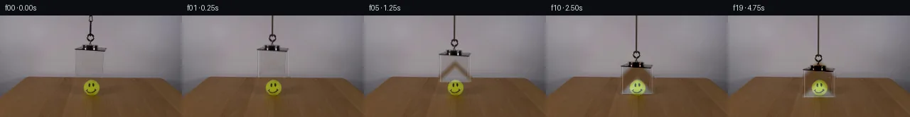

![首帧]()

Round 00
2026-11-05T02:05:03.935336+00:00像素候选变化代码 +223/−0inspection 更新
pixels f85d72889d783d74 · code c4490d1bcc21457e
查看本轮 generate.py 真实 diff
--- previous/generate.py
+++ current/generate.py
@@ -0,0 +1,223 @@
+#!/usr/bin/env python3
+"""Generate the 20-frame locked-off acrylic-box descent.
+
+The source photograph remains the foundation of every frame. A clean wall
+plate is inferred only where the original suspended object was, and the
+photographic residual of that object is translated over the plate. The ball
+and tabletop are never geometrically moved.
+"""
+
+from pathlib import Path
+import hashlib
+
+import cv2
+import numpy as np
+from PIL import Image, ImageDraw, ImageFont
+
+import artifact_io
+
+
+ROOT = Path(__file__).resolve().parent
+H, W = 144, 256
+
+
+def source_image() -> np.ndarray:
+ image = np.asarray(Image.open(ROOT / "first_frame.png").convert("RGB"))
+ assert image.shape == (H, W, 3)
+ return image
+
+
+def soft_mask(mask: np.ndarray, sigma: float = 0.75) -> np.ndarray:
+ """Feather a binary matte without allowing appreciable distant spill."""
+ f = cv2.GaussianBlur(mask.astype(np.float32), (0, 0), sigma)
+ f[f < 0.015] = 0.0
+ return np.clip(f, 0.0, 1.0)
+
+
+def clean_wall_plate(src: np.ndarray) -> tuple[np.ndarray, np.ndarray]:
+ """Remove the original cord/box from the plain wall by local inpainting."""
+ removal = np.zeros((H, W), np.uint8)
+
+ # Cord, knot/hook/top plate, and transparent box. Stop above the table
+ # horizon so neither the table nor ball is ever synthesized.
+ cv2.rectangle(removal, (124, 0), (131, 31), 255, -1)
+ cv2.rectangle(removal, (103, 25), (152, 53), 255, -1)
+ cv2.rectangle(removal, (104, 45), (152, 87), 255, -1)
+
+ # TELEA supplies a locally smooth continuation of the featureless wall.
+ clean = cv2.inpaint(src, removal, 7, cv2.INPAINT_TELEA)
+ return clean, removal
+
+
+def object_residual(src: np.ndarray, clean: np.ndarray) -> tuple[np.ndarray, np.ndarray]:
+ """Extract photographic apparatus/acrylic appearance above the horizon."""
+ matte = np.zeros((H, W), np.float32)
+
+ # Opaque hanging assembly, excluding the long upper cord (redrawn later).
+ matte[26:51, 103:153] = 1.0
+
+ # Transparent acrylic body. The residual includes the actual subtle
+ # neutral/cool transmission variation visible in the photograph.
+ matte[47:87, 104:153] = 1.0
+ matte = soft_mask(matte, 0.65)
+
+ residual = (src.astype(np.float32) - clean.astype(np.float32)) * matte[..., None]
+ return residual, matte
+
+
+def translate(array: np.ndarray, dy: float, interpolation: int) -> np.ndarray:
+ matrix = np.float32([[1.0, 0.0, 0.0], [0.0, 1.0, dy]])
+ return cv2.warpAffine(
+ array,
+ matrix,
+ (W, H),
+ flags=interpolation,
+ borderMode=cv2.BORDER_CONSTANT,
+ borderValue=0,
+ )
+
+
+def draw_antialiased_line(
+ frame: np.ndarray,
+ xy: tuple[float, float, float, float],
+ color: tuple[int, int, int],
+ width: float,
+ opacity: float,
+) -> None:
+ """Composite one anti-aliased line using a 4x coverage mask."""
… diff truncated; 136 more lines …